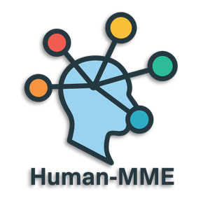

Holistic Coverage
Eight evaluation dimensions stress-test MLLMs on recognition, understanding, reasoning, and safety around humans.

A holistic evaluation suite that pushes Multimodal Large Language Models to understand, reason, and interact within human-centric scenarios.
Multimodal agents are increasingly deployed alongside people. Human-MME was created to systematically evaluate these systems across the full spectrum of human-centric perception, understanding, and interaction.
The benchmark covers eight complementary capability axes — from fine-grained human recognition to multimodal perception of relationships and emotions — offering a dependable lens into real-world readiness for MLLMs.
Explore documentationEight evaluation dimensions stress-test MLLMs on recognition, understanding, reasoning, and safety around humans.
Curated image-question pairs reflect daily life, complex interactions, and diverse demographics.
Plug in any MLLM by extending a simple interface and immediately obtain comparable metrics.
Share results through the leaderboard to benchmark progress transparently across the community.
Human-MME assesses MLLMs with 19,450 carefully designed examples that target the following capability axes. Each dimension is evaluated through both multiple-choice and free-form tasks.
Identify subtle human attributes such as age, attire, pose, or accessories from complex scenes.
Comprehend the overall context, activity, or setting of human-centered imagery.
Interpret intentions, relationships, and social roles between individuals.
Reason about interactions between humans and surrounding objects or environments.
Blend visual cues with commonsense knowledge to answer how and why questions.
Match consistent identities across images and textual descriptions.
Demonstrate fairness and inclusivity across cultures, regions, and demographics.
Recognize and reason about a wide range of affective states and expressions.
Run the benchmark locally or in the cloud with only a few commands.
git clone https://github.com/Yuan-Hou/Human-MME.git
python -m venv .envsource .env/bin/activatepip install -r requirements.txt
mllm_models/ by extending BaseModel, then register it in benchmark.py.
python benchmark.py --model_name YourModelName--continuing if needed and compute metrics via --calc_metrics.
After evaluation, upload results/result_YourModelName.json in a pull request. The maintainers verify submissions before publishing them to the official leaderboard.
Leaderboard metrics aggregate the eight capability axes above to give a single score that summarizes human-centric performance.
| Model | Avg. |
|---|---|
| GLM-4.5V | 76.0 |
| Qwen2.5-VL-72B | 72.8 |
| GLM-4.1V-9B | 69.1 |
Delve into the benchmark design, annotation process, and evaluation insights.
Read on arXivDownload high-quality images, questions, and labels curated for human-centric reasoning.
View on Hugging FaceJoin discussions, share results, and collaborate on advancing human-aware multimodal systems.
Open GitHub Issues